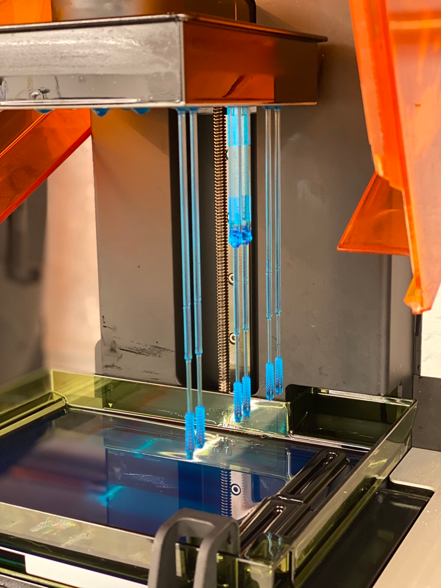

Covid swab

Summary
During the SARS-COV2 pandemic I designed a swab for e25bio that integrated their lateral flow assay into the nasopharyngeal swab. I based the honeycomb design on the Northwell approved tip, and I designed the assay section around the test strips used. Initially printed using the Tough resin while waiting for the Surgical Guide Resin to arrive, I switched for final prototypes to ensure biocompatibility.